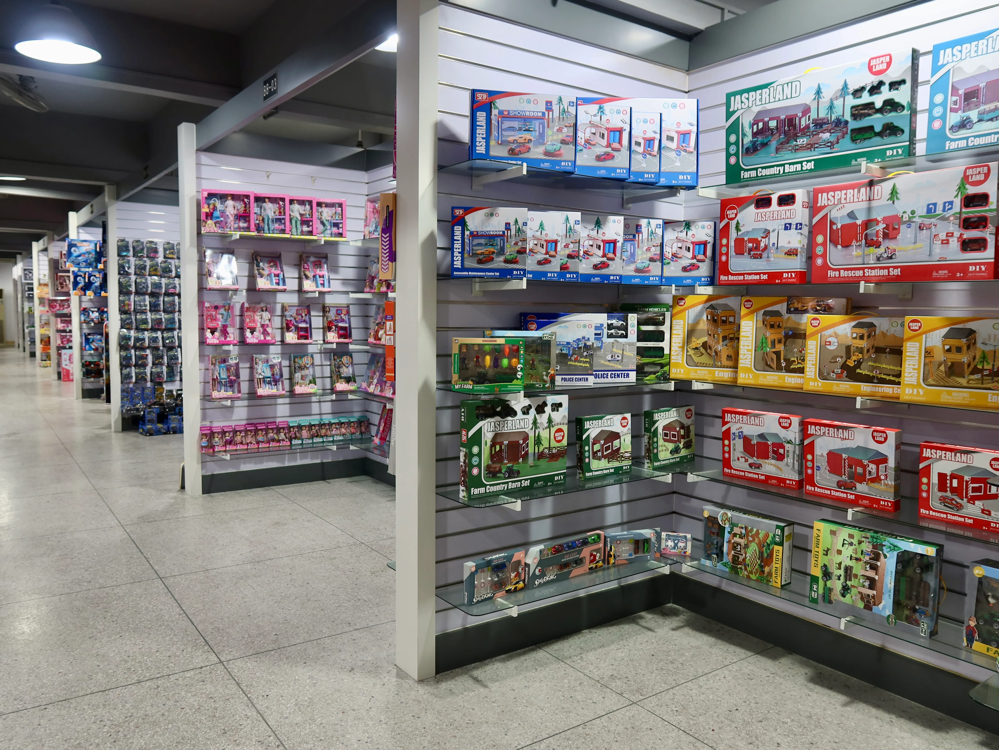

China Sourcing
More supplier options. One coordinated process
We help international buyers search, compare, sample, follow, inspect, and prepare orders across a broad network of Chinese factories.
Why ABERO
Sourcing is more than finding a supplier
Our B2B sourcing model combines local expertise with on-the-ground execution. Operating from our sourcing offices in Shantou and Yiwu, we help international buyers identify reliable manufacturers and manage sourcing projects across China.
ABERO manages the entire sourcing process — from supplier selection and quotation comparison to sampling, production follow-up, quality inspection, and export coordination. One team. One process. One accountable partner.
ABERO sourcing team
- Supplier selection
- Quotation comparison
- Sampling
- Production follow-up
- Quality inspection
- Export coordination
One accountable partner
Regional Coverage
Match the category to the right production base
Regional strengths help narrow the search and improve the fit between a product requirement and a supplier's actual capability.
Shantou / Chenghai
Toys, ride-ons, vehicles, plastic products, and broad category showrooms.
Shenzhen / Dongguan
Electronic products, connected components, tooling, and mixed processes.
Yiwu / Zhejiang
Small commodities, accessories, promotional products, and seasonal ranges.
Ningbo / East China
Plastic products, outdoor items, packaging, and export-oriented suppliers.

Range Development
How we build a product range
Category development is organized around a clear commercial brief and a repeatable selection process.
- 01Analyze the market
- 02Select suppliers
- 03Review samples
- 04Compare quotations
- 05Finalize the assortment